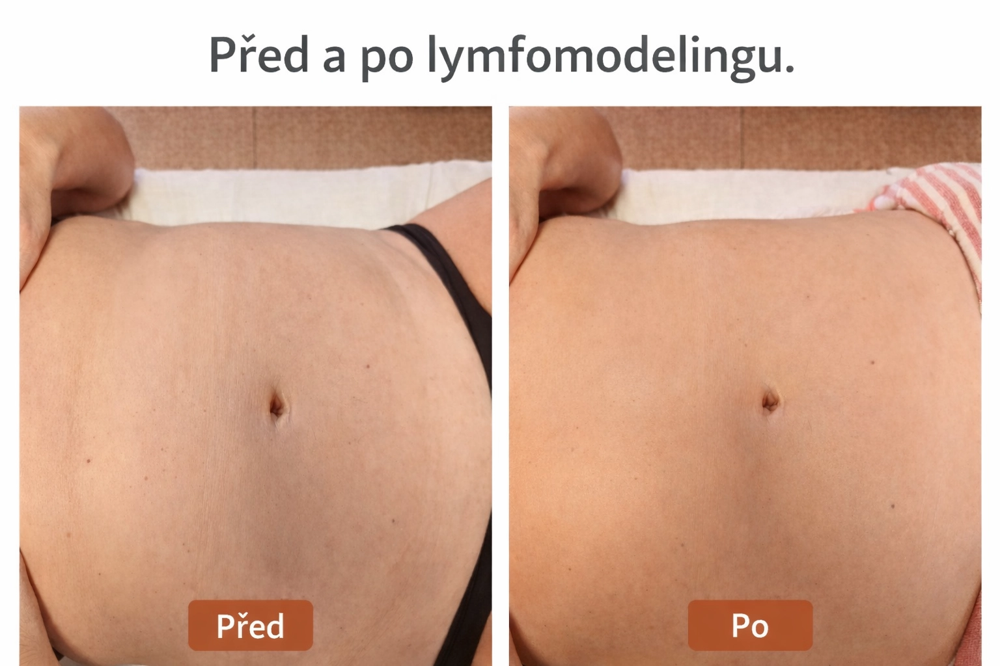

![Maderoterapie UH logo]()
Co je lymfomodeling?

Lymfomodeling je moderní a komplexní technika, která propojuje principy manuální lymfodrenáže s cíleným tvarováním postavy. Na rozdíl od klasické lymfodrenáže, která se zaměřuje primárně na terapeutické odvodnění tkání, jde lymfomodeling o krok dál — kombinuje drenážní efekt s intenzivním modelačním působením na podkožní tukovou tkáň.
Ošetření probíhá pomocí speciálních hmatů, které jsou cílenější a intenzivnější než u klasické lymfodrenáže, ale vždy respektují anatomii a fyziologii lymfatického systému. Terapeut pracuje na problematických partiích — stehnech, hýždích, břiše, bocích i pažích — a kombinuje drenážní tahy s modelačními technikami, které pomáhají rozbíjet tukové shluky, zlepšovat odtok lymfy a podporovat metabolismus v podkoží.
Výsledky jsou viditelné okamžitě po první proceduře — klientky popisují výrazné odlehčení, snížení objemu a zpevnění ošetřených partií. To dělá z lymfomodelingu jeden z nejoblíbenějších estetických ošetření v našem studiu.
Přínosy procedury
Co procedura přináší?
- Okamžité odlehčení a snížení otokůJiž po první proceduře pocítíte výrazné odlehčení těžkých nohou, snížení otoků kotníků, lýtek i stehen. Přebytečná tekutina se efektivně odvádí z tkání a tělo se zbavuje zadržované vody.
- Viditelné tvarování postavyModelační techniky cíleně působí na tukové zásoby v problematických partiích. Po sérii procedur dochází k měřitelnému snížení obvodu stehen, hýždí a břicha.
- Zpevnění a zlepšení kvality pokožkyIntenzivní stimulace podkožní tkáně podporuje tvorbu kolagenu a elastinu. Pokožka se stává hladší, pevnější a pružnější — mizí pomerančová kůže a povrch kůže se vizuálně vyhlazuje.
- Podpora detoxikace organismuStimulace lymfatického systému urychluje přirozené odvádění toxinů a odpadních látek z těla. Zlepšuje se celkové vnitřní prostředí organismu a podporuje se imunitní systém.
- Podpora při hubnutí a sportovní regeneraceLymfomodeling skvěle doplňuje redukční dietu a pohybový program — urychluje metabolismus tuků a zkracuje dobu regenerace po fyzické zátěži. Oblíbený u sportovkyň i žen po porodu.

Průběh procedury a příprava
Před procedurou je nutný dvoudenní pitný režim — minimálně 2 litry vody denně. Bezprostředně před ošetřením nejíst. Tato příprava maximalizuje detoxikační efekt a zajišťuje nejlepší výsledky.
Samotná procedura začíná krátkým zhodnocením stavu a stanovením cíle ošetření. Terapeut poté pracuje na vybraných partiích kombinací drenážních a modelačních hmatů. Ošetření je intenzivní, ale nebolestivé — pocit je srovnatelný s hlubokou masáží.
Po proceduře je vhodné zvýšit příjem tekutin (minimálně 1,5 l za zbytek dne), zařadit lehký pohyb jako procházku a vyhnout se alkoholu a těžkým jídlům. Tyto kroky výrazně podpoří detoxikační efekt a dlouhodobé výsledky.
Pro koho je vhodný
Indikace a kontraindikace
- Otoky a zadržování vody
- Celulitida a tukové zásoby
- Snížená pružnost pokožky
- Podpora při hubnutí
- Regenerace po sportu
- Pocit těžkých nohou
- Akutní infekční onemocnění
- Aktivní nádorová onemocnění
- Těžké srdeční selhání
- Hluboká žilní trombóza
- Těhotenství a kojení do 6 měsíců
- Čerstvé úrazy a otevřené rány
Časté otázky
Vše co potřebujete vědět
Podobné procedury
Mohlo by vás zajímat
Objednejte se na Lymfomodeling
Rezervace online nebo telefonicky. Těším se na vás v Uherském Hradišti.
Šestý smysl, Hradební 1543, 686 01 Uherské Hradiště · Po–Pá 9:00–17:00